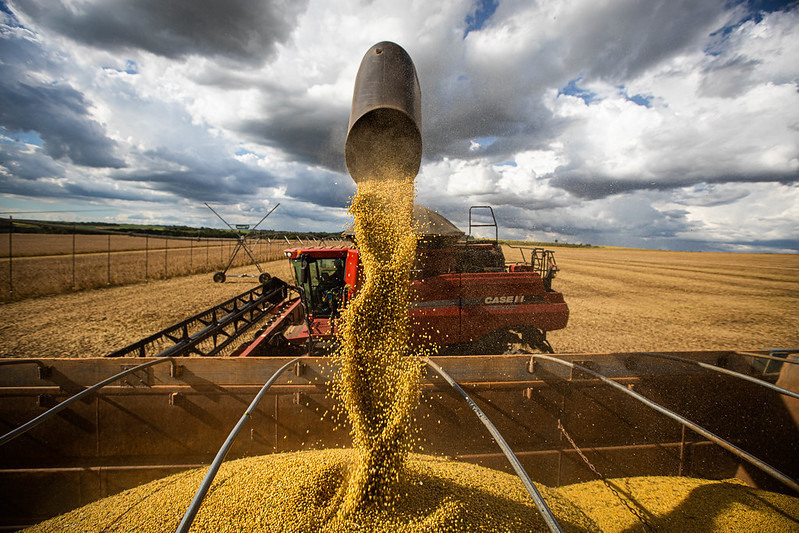
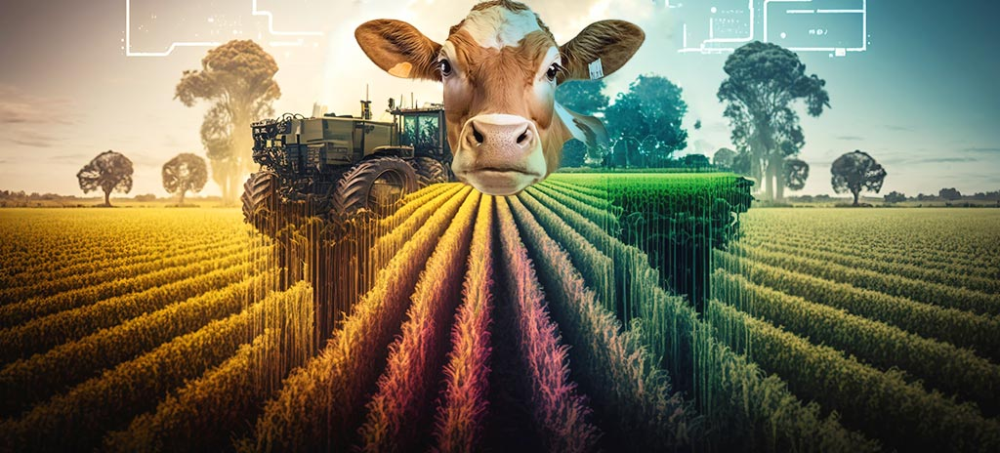

A agricultura é de extrema importancia para nossa vida pois ela nos proporciona uma segurança alimentar além de ajudar a economia do pais, desenvolvimento rural, tecnologico entre outros.
A agropecuária garante o abastecimento de alimentos para a população, fornecendo matérias-primas essenciais para diversas indústrias. Além disso, contribui para a segurança alimentar, gerando empregos e impulsionando a economia.
Com o avanço das tecnologias no setor agropecuário, a capacitação dos funcionários se tornou uma prioridade para os produtores. A introdução de ferramentas avançadas, como sistemas de gestão de dados, agricultura de precisão e automação, exige que os trabalhadores adquiram novas habilidades e conhecimentos. Investir em treinamentos especializados permite que a equipe compreenda e utilize eficazmente essas tecnologias, maximizando sua eficiência e impacto positivo na produção. Além disso, a capacitação contínua promove a adaptação às inovações, garantindo que a equipe possa implementar melhores práticas, resolver problemas rapidamente e manter a competitividade no mercado. Assim, a formação adequada não só melhora a operação diária, mas também contribui para o sucesso a longo prazo do empreendimento agropecuário.